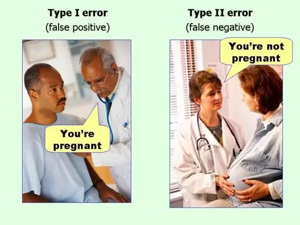

Experiments 101 FAQ
Short answers to common questions about testing whether a program, message, or policy works.
About these FAQs
Governments, health systems, and organizations launch programs, reminders, and campaigns every day, often based on intuition, on what worked somewhere else, or on numbers that rose after launch. These signals can mislead: some programs that seem obviously useful do nothing (don't waste money!), while some small changes work surprisingly well. Experiments are the most reliable way to tell which is which. These FAQs cover some of the basics in plain language, with examples and interactive figures.
What is an experiment?
Broadly, an experiment is a test run under controlled conditions to discover an effect, test a hypothesis, or try out a new idea. In a typical behavioral science experiment, you randomly assign people to groups, give each group a different version of something you control, and compare their outcomes. That something is often a message, a form, a reminder, or a default option. Because chance alone decided who got which version, the groups are alike on average before anything happens. So when their outcomes differ by more than chance alone would produce, the difference can be attributed to the version they received.
Illustration. The comparison group shows what would have happened without the reminder.
Note: this guide covers between-subjects experiments, in which each person receives only one version, the design most randomized controlled trials use. It does not cover within-subjects experiments, in which each person receives several versions, or quasi-experimental designs, such as difference-in-differences, which estimate causal effects without random assignment but rely on stronger assumptions.
What do I need to run an experiment?
Not a full checklist, but you can't run an experiment without these five.
A message, a letter, a reminder, a default. You decide who gets which version.
Chance, not people's choices or yours, decides who gets which version.
Decided in advance, for example whether each person got vaccinated within three months.
Calculated before you start, based on the smallest effect that would matter.
A record of who was assigned to which group, and an ID that connects each person to their outcome data.
Why do experiments matter?
Two things can move together (a correlation) without one causing the other (causation). Data that simply observe people, without changing anything, often can't tell the difference. Here is a well-documented case.
The scatter plot is an illustration. Its pattern is exaggerated so it is easy to see; in real studies the association is smaller.
What does this get you?
In two experiments with more than 160,000 patients, a simple text reminder raised COVID-19 vaccinations by 3.6 percentage points. Adding an informational video did not increase its effect (Dai et al., 2021).
Testing several versions at once, with the same people and the same outcome, shows which works best. In a megastudy of 22 flu-shot text reminders, the top message told patients a flu shot was "waiting for you" (Milkman et al., 2022).
"It works" is not enough to decide. On average, the 22 text reminders in that megastudy raised vaccination by 2 percentage points (a 6.8% relative increase), from about 29% to 31%. That size, weighed against cost, is what a decision needs.
Repeating a test in other places, times, or groups shows whether an effect is robust or depends on other factors (e.g., target audience, context).
Why can't I just compare before and after?
A common way to judge a program is to compare outcomes before and after it starts. The problem is that many things change at the same time. Imagine a clinic sends a flu-shot reminder to its patients on October 1.
Illustration with made-up numbers.
How should I choose a control group?
A control group (also called a comparison group) is the group that does not receive the new intervention. Its purpose is to show what would have happened without it: because people are assigned to it at random, the difference between the control group and the other groups estimates the intervention's effect.
There are two main types:
People receive nothing new. This answers the question: does the intervention work compared with doing nothing? Example: patients who get no flu-shot reminder.
People receive the standard approach, whatever is normally offered. This answers the question: does the new version work better than what we already do? Example: patients who get the clinic's usual reminder letter.
Which one to use depends on the comparison you care about. If you want to know whether a behaviorally informed reminder works better than the reminder your organization already sends, use an active control. If nothing is currently done, a pure control is the natural choice.
You can also include both, if your sample is large enough. Each additional group needs its own share of people to detect the effects you care about (see question 6).
How many people do I need?
Usually more than you'd expect: detecting small effects often takes thousands of people per group.
Even with random assignment, results bounce around by chance. The more people in each group, the less they bounce, and the smaller the effect you can reliably detect. Many effects worth having are small: the vaccination texts above raised vaccination by 2 percentage points. Spotting an effect that size takes thousands of people per group.
What you need to decide before calculating
- Baseline rateHow common the outcome is without the intervention, for example 29% of patients get vaccinated. Past data usually tell you.
- Smallest effect worth detectingThe smallest change that would matter for your decision, for example 2 percentage points. Smaller effects need many more people.
- Significance levelHow much risk of a false alarm you accept. The standard is 5%.
- PowerThe chance of detecting the effect if it is real and at least as large as the effect you planned for. The standard is 80%.
See how sample size changes what you can learn
"Reliably detect" means a real effect of that size would be found 80% of the time, at a 5% significance level.
Sample size calculator (two groups, yes-or-no outcome)
Uses the standard formula for comparing two proportions.
How can chance lead a study to the wrong conclusion?
In two ways: finding an effect that isn't real (a false positive), or missing one that is (a false negative).
Both mistakes happen because results bounce around by chance. The two settings in the calculator, significance level and power, control how often each one happens.

| The effect is real | There is no real effect | |
|---|---|---|
| The study finds an effect | Correct. The chance of this is the power. | Type I error (false positive). Its chance is the significance level. |
| The study finds no effect | Type II error (false negative). Its chance is 1 minus the power. | Correct. |
Significance level controls false positives. At the standard 5%, an intervention that truly does nothing will still produce a statistically significant result in about 1 test out of 20, by chance alone.
Power controls false negatives. At the standard 80%, a real effect of the size you planned for will be detected 4 times out of 5, and missed 1 time out of 5.
Both mistakes have real costs. A false positive can lead you to scale up a program that doesn't work; a false negative can lead you to abandon one that does. Guarding more strictly against either one requires more people, which is why the calculator asks for both.
Do more people reduce both errors?
False positives (Type I) don't shrink with more people. Their rate is set by the significance level you choose, whatever the sample size.
False negatives (Type II) shrink as the sample grows. More people means less noise, so a real effect is easier to see.
Two cautions:
Significant results from small studies deserve extra caution. Low power mainly means missing real effects, but it also makes significant results less trustworthy. Real effects get detected less often, while false positives keep occurring at the same rate, so a larger share of the significant results are false positives. For example, if half the ideas being tested really work, about 1 in 17 significant results is a false positive at 80% power, but about 1 in 5 at 20% power. The real effects that do reach significance also tend to look bigger than they are (Button et al., 2013).
Very large studies can detect effects too small to matter (although, see question 8). With enough people, even a tiny difference becomes statistically significant. Whether it is worth acting on depends on its size and its cost.
Can a sample be too big?
Statistically, no. More people always give a more precise answer. The worry that a large study makes trivial effects "significant" is answered by looking at the size of the effect, which a larger sample doesn't change, rather than by using fewer people. As Joe Simmons puts it on the Data Colada blog, "It is never worse to have more data" (Simmons, 2013). The real limits are practical: cost, time, and how many people you are willing to expose to an intervention that hasn't been tested yet.
Nudge behavioral economist Richard Thaler to get a quote about experiments
Go on, give him a nudge…
Photo: US Embassy Sweden, via Wikimedia Commons (CC BY 2.0); cropped and background removed.
Sources
- Azad, M. B., et al. (2017). Nonnutritive sweeteners and cardiometabolic health: A systematic review and meta-analysis of randomized controlled trials and prospective cohort studies. CMAJ, 189(28), E929–E939.
- Button, K. S., et al. (2013). Power failure: Why small sample size undermines the reliability of neuroscience. Nature Reviews Neuroscience, 14(5), 365–376.
- Dai, H., Saccardo, S., Han, M. A., Roh, L., Raja, N., Vangala, S., Modi, H., Pandya, S., Sloyan, M., & Croymans, D. M. (2021). Behavioural nudges increase COVID-19 vaccinations. Nature, 597(7876), 404–409.
- Milkman, K. L., et al. (2022). A 680,000-person megastudy of nudges to encourage vaccination in pharmacies. PNAS, 119(6), e2115126119.
- Miller, P. E., & Perez, V. (2014). Low-calorie sweeteners and body weight and composition: A meta-analysis of randomized controlled trials and prospective cohort studies. American Journal of Clinical Nutrition, 100(3), 765–777.
- Simmons, J. (2013). [6] Samples can't be too large. Data Colada.
- Thaler, R. H. (2012). We can't do evidence-based policy without evidence [Conversation]. Edge.
- Thaler, R. H. (2015). Misbehaving: The making of behavioral economics. W. W. Norton.
- Thaler, R. H. (2015). Misbehaving: The making of behavioral economics [Talk]. Talks at Google.
- Thaler, R. H. (2017). From cashews to nudges: The evolution of behavioral economics [Nobel Prize lecture, December 8]. Nobel Foundation.
- Wilms, R., Mäthner, E., Winnen, L., & Lanwehr, R. (2021). Omitted variable bias: A threat to estimating causal relationships. Methods in Psychology, 5, 100075.